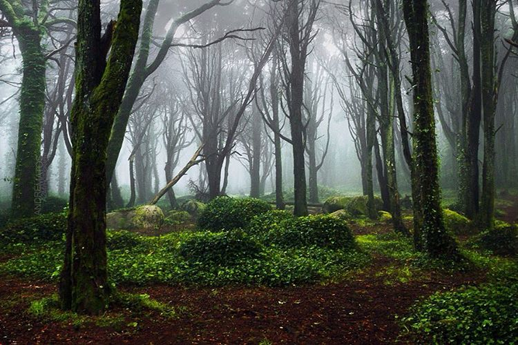
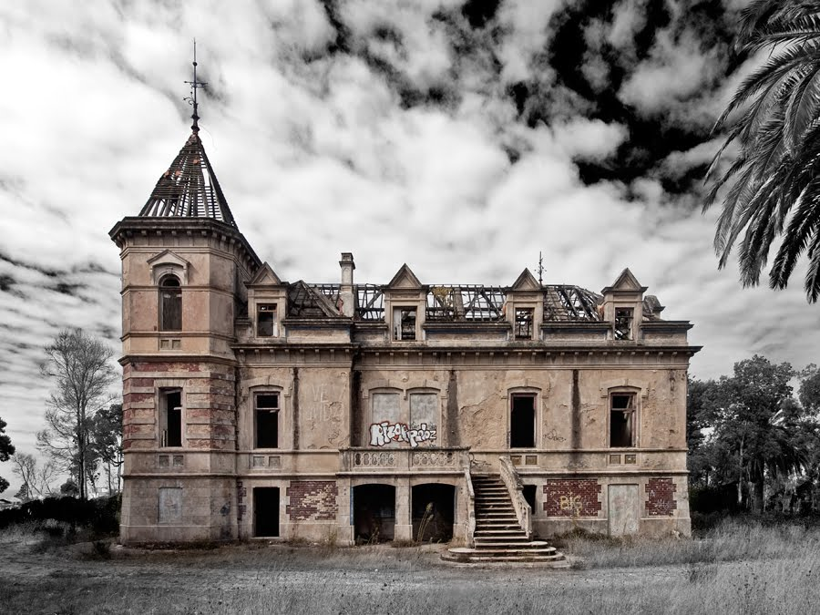
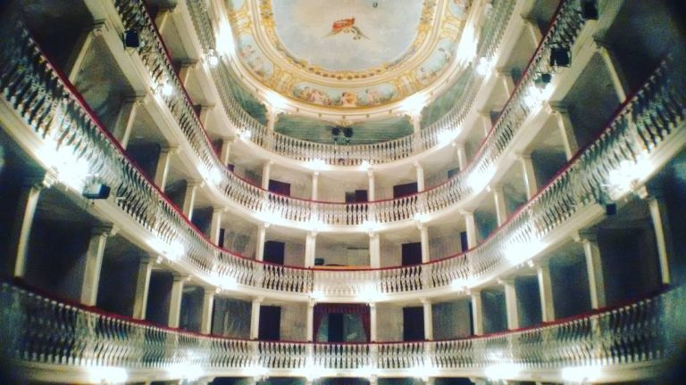
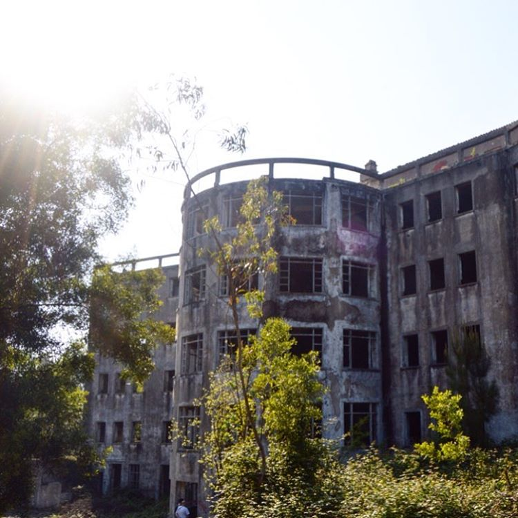
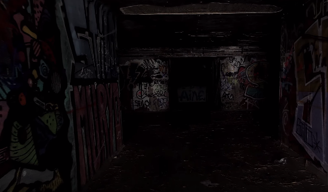

#5 - Palácio de Valenças, Sintra
Sintra tem todos os ingredientes para uma escapadinha romantica, mas também para ser o palco de histórias de terror e suspense – e Eça de Quierós soube aproveitar bem esse mistério na sua obra e existem várias tours noturnas pela Serra de Sintra! Adiante! Conta a história, que a criada do Conde de Valenças, Palmira, depois de um amor não correspondido, se suicidou… e que ainda hoje anda por ali, a rondar a casa, chorando o amor que nunca teve!

#4 - Palacete de Marques Gomes, Vila Nova de Gaia
Conta quem aqui já tentou entrar, que logo a entrada, se ouvem berros “Saiam daqui! Saiam daqui!”, numa voz fria e aguda, ouvindo passos pelos corredores da casa... tentando expulsar os mais atrevidos! O palacete da Gaia foi construído nos finais do século XIX e mesmo agora aqueles que se aventuram, acabam por fugir, da casa assombrada de Vila Nova de Gaia!

#3 - Teatro Lethes, Faro
Diz-se que por vezes e quando tudo está em silencio, se pode escutar passos e a madeira do palco principal do Teatro de Lethes, em Faro, a ranger. Conta-se que uma bailarina, exausta pela exigencia, ali se suicidou, enforcando-se no palco do teatro e que a alma da bailarina, ainda hoje anda (ou dança!) por ali ...

#2 - Sanatório de Mont Alto, Serra de Valongo
Visitar uma ala psiquiátrica, já é suficiente para sentir um friozinho de barriga! O Sanatório de Valongo foi aberto para cuidar de doentes com tuberculose e apesar das 50 camas, chegou a acolher 350 pacientes! Existem história de negligencia e maus-tratos documentadas, que logo se transformaram em lendas de arrepiar! Não é pois uma surpresa, as histórias sobre espíritos dos doentes tuberculosos, que deambulam pelos corredores e assombram aqueles que por aqui se aventuram!

#1 - Bataria da Parede
O motivo de este lugar estar em primeiro lugar no TOP 5 é, de certa maneira estranho, e assustador! Não se sabe o que lá se passa durante a noite, e não existem relatos de nada porque NINGUÉM ATÉ HOJE SE ATREVEU a entrar nos túneis de noite... Ou será que sim? Há uma história sobre um miúdo que desapareceu, após ter se afastado do seu grupinho, durante uma "exploração noturna" ... Até hoje, é o lugar escolhido pelos mais aventureiros e curiosos... Será que existe alguma coisa dentro daqueles túneis durante a noite? Não se sabe... A última exploração noturna que houve, foi quando o rapaz desapareceu... Talvez haja... Mas ele não está cá para contar...
